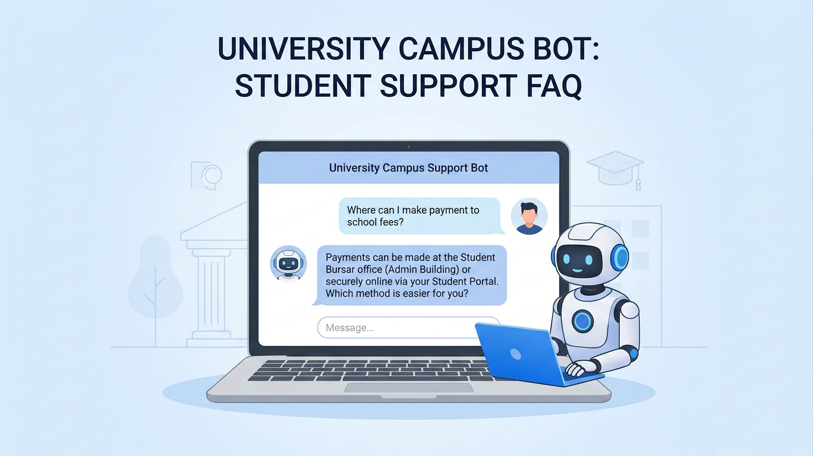

Chatbot for Customer Support

Project Topic: Chatbot for Customer Support
This project aims to develop a chatbot-based system that assists university students
with IT-related support and general inquiries. The system leverages natural language
processing (NLP) to understand user queries, provide relevant responses, and guide users
through common issues. Additionally, the chatbot enhances user experience by offering
quick replies, multi-turn conversations, and efficient access to support resources,
reducing the workload on human IT helpdesk staff.